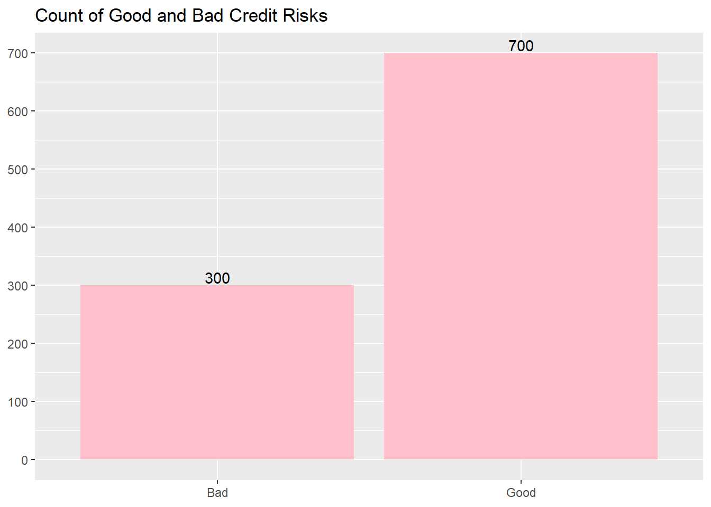
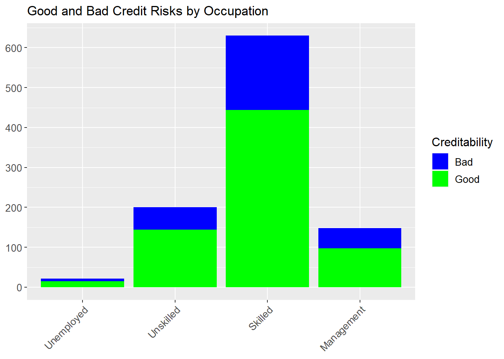
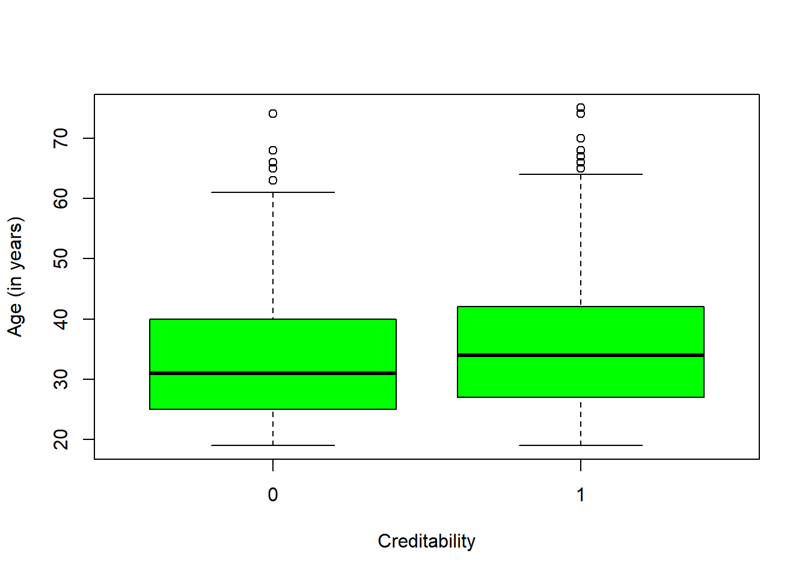
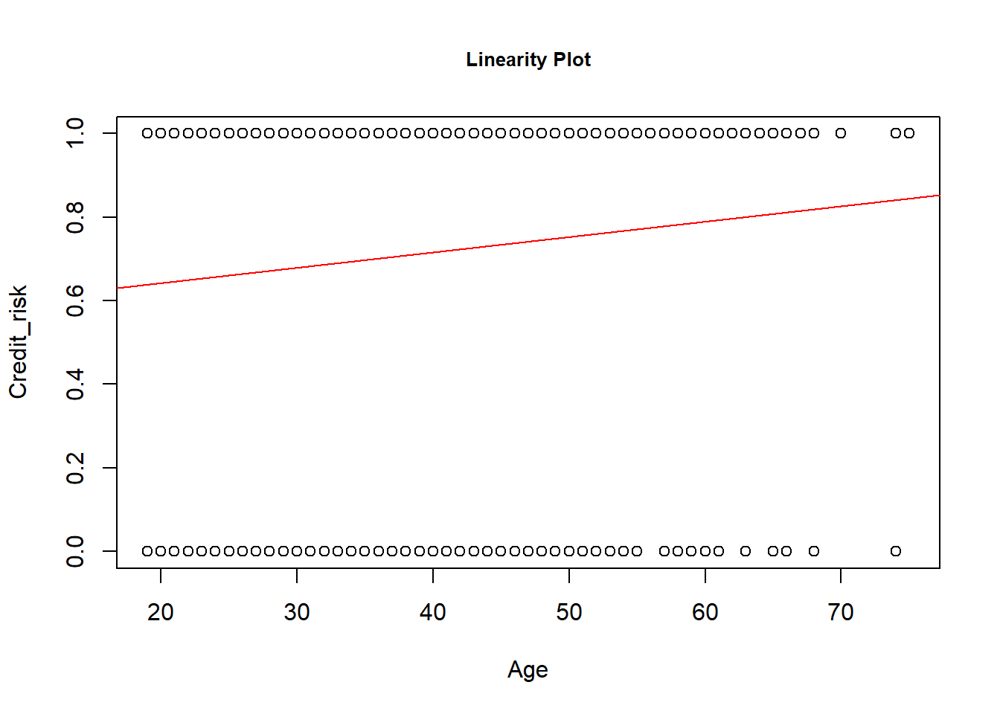
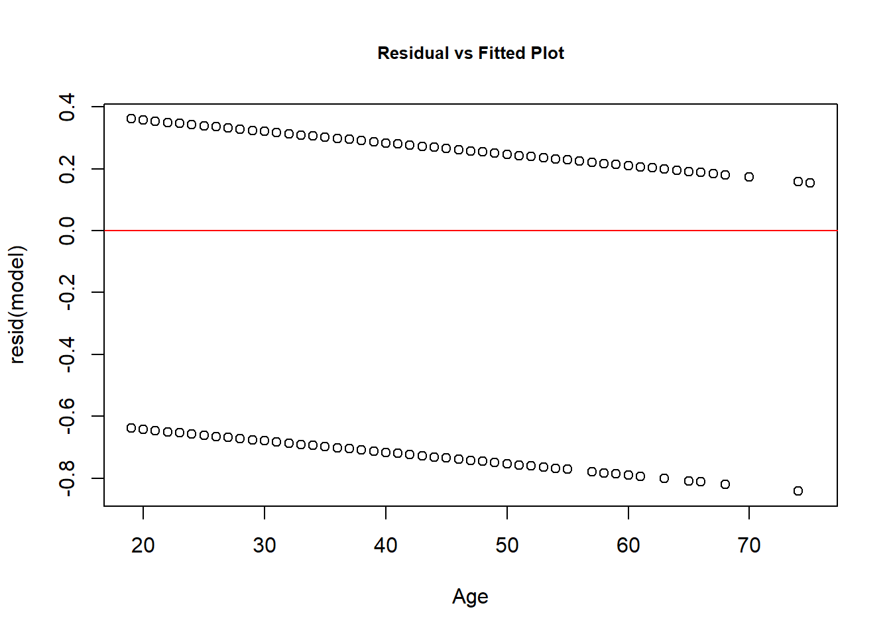
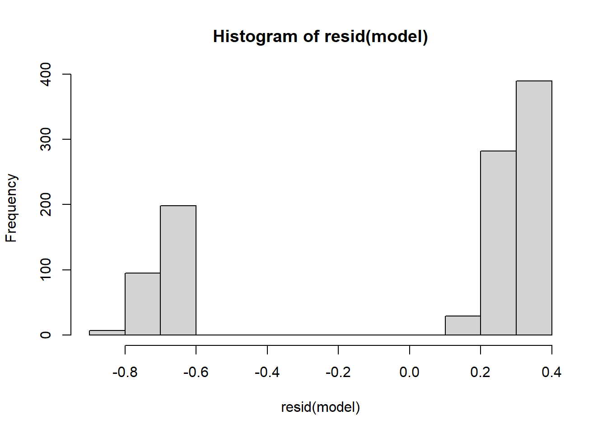
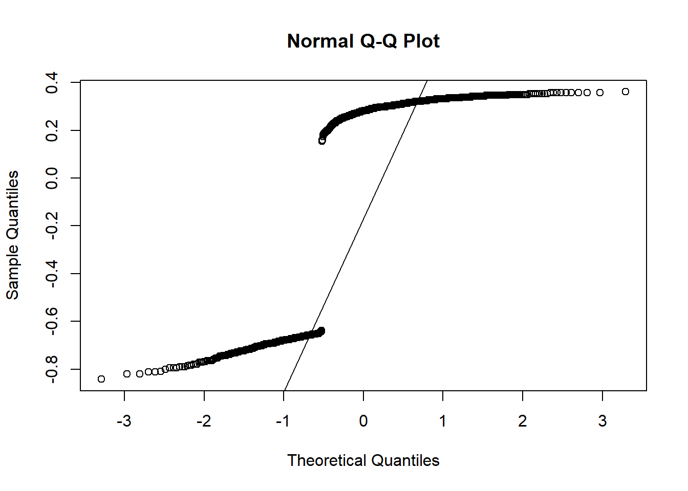
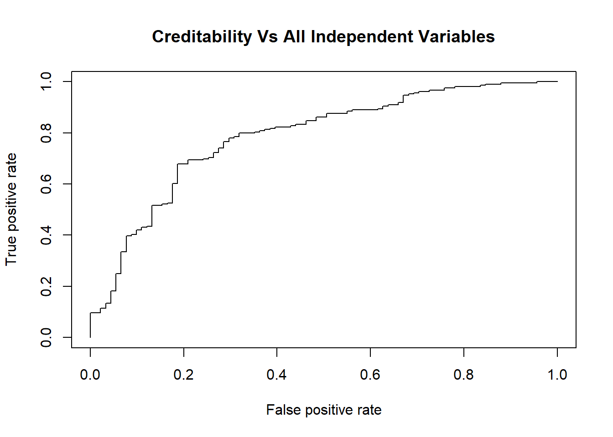

Warning: package 'caret' was built under R version 4.2.2
Loading required package: lattice
Attaching package: 'caret'
The following object is masked from 'package:purrr':
lift
Code
library(ROCR)
Warning: package 'ROCR' was built under R version 4.2.2
Code
library(rpart)library(rpart.plot)
Warning: package 'rpart.plot' was built under R version 4.2.2
Code
library(rattle)
Warning: package 'rattle' was built under R version 4.2.2
Loading required package: bitops
Rattle: A free graphical interface for data science with R.
Version 5.5.1 Copyright (c) 2006-2021 Togaware Pty Ltd.
Type 'rattle()' to shake, rattle, and roll your data.
Code
library(ggplot2)library(plotly)
Warning: package 'plotly' was built under R version 4.2.2
Attaching package: 'plotly'
The following object is masked from 'package:ggplot2':
last_plot
The following object is masked from 'package:stats':
filter
The following object is masked from 'package:graphics':
layout
Code
knitr::opts_chunk$set(echo =TRUE)
Introduction
Credit risk is defined as the risk of loss resulting from the failure by a borrower to repay the principal and interest owed to the leader.So the purpose of credit analysis is to determine the creditworthiness of borrowers by measuring the risk of loss that the lender is exposed to.When calculating the credit risk of a particular borrower, lenders consider various factors like analyze different documents, such as the borrower’s income statement, balance sheet, credit reports, and other documents that reveal the financial situation of the borrower to evaluate the characteristics of the borrower and conditions of the loan to estimate the financial loss.
Research Question
Q1. How credit risk depends on the age of the person?
The purpose of this project is to take a data set of loan applications and build a predictive model for making a decision as to whether to approve a loan based on the applicant’s profile.
Hypothesis
For this research, the quantitative data was used. Based on probability techniques, this research has chosen to use random sampling method based on documents and records of applicants for a German credit. In this study dependent variables are divided in two groups. Good and bad legal customers; the aim of this study is to estimate the important independent variables. In this regard, good customer is a company which repays its loan plus the profit at the due date and in contrast, bad customer is a company which don’t repay at the due date. To differentiate between good and bad customers in our statistical analysis calculations, 1 is illustrating good customers and 0 is illustrating bad customers.
H0: There is a no relationship between age and credit risk. HA: There is a relationship between age and credit risk.
Dataset
The data for the analysis is a set of 1000 German credit applications with 20 different attributes of the applicant. The original data is from the UCI Machine Learning Repository but the CSV version used in this analysis can be found from the Penn State University website (https://onlinecourses.science.psu.edu/stat857/node/215).
The following code can be used to determine if an applicant is credit worthy and if he (or she) represents a good credit risk to the lender. Several methods are applied to the data to help make this determination. We will look at them in this case.
Rows: 1000 Columns: 21
── Column specification ────────────────────────────────────────────────────────
Delimiter: ","
dbl (21): Creditability, Account Balance, Duration of Credit (month), Paymen...
ℹ Use `spec()` to retrieve the full column specification for this data.
ℹ Specify the column types or set `show_col_types = FALSE` to quiet this message.
Code
str(credit)
spc_tbl_ [1,000 × 21] (S3: spec_tbl_df/tbl_df/tbl/data.frame)
$ Creditability : num [1:1000] 1 1 1 1 1 1 1 1 1 1 ...
$ Account Balance : num [1:1000] 1 1 2 1 1 1 1 1 4 2 ...
$ Duration of Credit (month) : num [1:1000] 18 9 12 12 12 10 8 6 18 24 ...
$ Payment Status of Previous Credit: num [1:1000] 4 4 2 4 4 4 4 4 4 2 ...
$ Purpose : num [1:1000] 2 0 9 0 0 0 0 0 3 3 ...
$ Credit Amount : num [1:1000] 1049 2799 841 2122 2171 ...
$ Value Savings/Stocks : num [1:1000] 1 1 2 1 1 1 1 1 1 3 ...
$ Length of current employment : num [1:1000] 2 3 4 3 3 2 4 2 1 1 ...
$ Instalment per cent : num [1:1000] 4 2 2 3 4 1 1 2 4 1 ...
$ Sex & Marital Status : num [1:1000] 2 3 2 3 3 3 3 3 2 2 ...
$ Guarantors : num [1:1000] 1 1 1 1 1 1 1 1 1 1 ...
$ Duration in Current address : num [1:1000] 4 2 4 2 4 3 4 4 4 4 ...
$ Most valuable available asset : num [1:1000] 2 1 1 1 2 1 1 1 3 4 ...
$ Age (years) : num [1:1000] 21 36 23 39 38 48 39 40 65 23 ...
$ Concurrent Credits : num [1:1000] 3 3 3 3 1 3 3 3 3 3 ...
$ Type of apartment : num [1:1000] 1 1 1 1 2 1 2 2 2 1 ...
$ No of Credits at this Bank : num [1:1000] 1 2 1 2 2 2 2 1 2 1 ...
$ Occupation : num [1:1000] 3 3 2 2 2 2 2 2 1 1 ...
$ No of dependents : num [1:1000] 1 2 1 2 1 2 1 2 1 1 ...
$ Telephone : num [1:1000] 1 1 1 1 1 1 1 1 1 1 ...
$ Foreign Worker : num [1:1000] 1 1 1 2 2 2 2 2 1 1 ...
- attr(*, "spec")=
.. cols(
.. Creditability = col_double(),
.. `Account Balance` = col_double(),
.. `Duration of Credit (month)` = col_double(),
.. `Payment Status of Previous Credit` = col_double(),
.. Purpose = col_double(),
.. `Credit Amount` = col_double(),
.. `Value Savings/Stocks` = col_double(),
.. `Length of current employment` = col_double(),
.. `Instalment per cent` = col_double(),
.. `Sex & Marital Status` = col_double(),
.. Guarantors = col_double(),
.. `Duration in Current address` = col_double(),
.. `Most valuable available asset` = col_double(),
.. `Age (years)` = col_double(),
.. `Concurrent Credits` = col_double(),
.. `Type of apartment` = col_double(),
.. `No of Credits at this Bank` = col_double(),
.. Occupation = col_double(),
.. `No of dependents` = col_double(),
.. Telephone = col_double(),
.. `Foreign Worker` = col_double()
.. )
- attr(*, "problems")=<externalptr>
1=Male Divorced 2=Male Single
3=Male, Married/Widowed 4=Female
Data cleaning
There are columns which contain spaces so removed spaces, rename column names.
Before starting the modeling phase, it is important to explore the data to get an idea of any patterns or areas of interest.
The first thing is to examine how many examples of good and bad credit risk there are.
Code
Plot1 <-ggplot(Credit_new1, aes(as.factor(Creditability))) +geom_bar(fill ="pink") +theme(axis.title.x=element_blank()) +theme(axis.title.y=element_blank()) +geom_text(aes(label=..count..),stat='count',position=position_dodge(0.9),vjust=-0.2) +scale_y_continuous(breaks=seq(0,700,100)) +scale_x_discrete(labels =c("Bad","Good")) +ggtitle("Count of Good and Bad Credit Risks")Plot1
Warning: The dot-dot notation (`..count..`) was deprecated in ggplot2 3.4.0.
ℹ Please use `after_stat(count)` instead.

The plot shows 300 people are of bad credit risk applicants versus 700 good. This is something that should be noted later when splitting the data set into training and test sets.
The next step is to explore some of the variables in the data. For example, it might be a fair assumption that amount of total savings is strongly linked to the credit risk of the applicant i.e. an applicant with little money in their account is a higher credit risk than one with a lot of savings? Another plot can be produced to confirm this.
plot2 <-ggplot(Credit_new1, aes(as.factor(Occupation), fill =as.factor(Creditability)), stat="identity") +geom_bar() +scale_fill_manual(values =c("blue", "green"), labels=c("Bad","Good"),name ="Creditability") +theme(axis.title.x=element_blank()) +theme(axis.title.y=element_blank()) +scale_y_continuous(breaks=seq(0,700,100)) +scale_x_discrete(labels =c("Unemployed", "Unskilled", "Skilled", "Management")) +theme(axis.text.x =element_text(angle =45, hjust =1, size =10)) +theme(axis.text.y =element_text(size =10)) +theme(legend.text=element_text(size=10)) +theme(legend.title=element_text(size=12)) +ggtitle("Good and Bad Credit Risks by Occupation")plot2

There appears to be less of a link with occupation. Most of the applicants come under ‘skilled employee’ but the credit ability of unskilled employees and management/highly qualified employees does not appear significantly different. However further statistical modeling is needed to support this initial analysis.
Finally, some exploration can be performed on age.
This analysis indicates perhaps some decrease in credit risk with age. However there is probably a lot of correlation between age and other factors such as savings and property so further statistical analysis is needed.
Code
boxplot( Credit_new1$Age.years~Credit_new1$Creditability, col ="green", xlab ="Creditability", ylab ="Age (in years)")

From the above box plot, we could see the median values of Good Creditability is more than Bad Creditability. Hence, Age will predict good credit risk. Now, if we see there are outliers in the data for both bad and good creditability, thus, it can impact the overall predictions.
Statistical modeling
Linear Regression with Age :
A linear regression is a statistical model that analyzes the relationship between a response variable (often called y) and one or more variables and their interactions (often called x or explanatory variables). Here we are calculating age relation with credit risk. Age is a independent variable (x) and credit risk is the dependent variable (y)
Perform OLS Regression
Code
Age <- Credit_new1$Age.yearsCredit_risk <- Credit_new1$Creditabilityplot(Age,Credit_risk, main ="Linearity Plot", cex.main =0.8)#fit simple linear regression modelmodel <-lm(Credit_risk~Age)abline(model, col ='red')

From the plot we can see that the relationship doesn’t appear to be linear.
Code
#view model summarysummary(model)
Call:
lm(formula = Credit_risk ~ Age)
Residuals:
Min 1Q Median 3Q Max
-0.8418 -0.6575 0.2817 0.3204 0.3610
Coefficients:
Estimate Std. Error t value Pr(>|t|)
(Intercept) 0.568989 0.047497 11.980 < 2e-16 ***
Age 0.003686 0.001273 2.895 0.00387 **
---
Signif. codes: 0 '***' 0.001 '**' 0.01 '*' 0.05 '.' 0.1 ' ' 1
Residual standard error: 0.4568 on 998 degrees of freedom
Multiple R-squared: 0.008331, Adjusted R-squared: 0.007337
F-statistic: 8.384 on 1 and 998 DF, p-value: 0.003868
Here is how to interpret the rest of the model summary:
Pr(>|t|): This is the p-value associated with the model coefficients. Since the p-value for age (0.00106) is significantly less than .05, we can say that there is a statistically significant association between age and credit risk(Credibility)
Multiple R-squared: This number tells us the percentage of the variation in the Credibility can be explained by the age. In general, the larger the R-squared value of a regression model the better the predictor variables are able to predict the value of the response variable. In this case, 1% of the variation in Credibility can be explained age.
2.Residual Plots:
Code
plot(Age, resid(model), main ="Residual vs Fitted Plot", cex.main =0.8)abline(h=0, col ='red')

Histogram:
Code
hist(resid(model))

4.Normal Q-Q plot:
Code
#create Q-Q plot for residualsqqnorm(resid(model))#add a straight diagonal line to the plotqqline(resid(model))

By seeing above plots for Linear Regression, we can deduce following inferences :
Linearity Plot : As we can see from the Linearity Plot, the linear regression line doesn’t follow the data points. As, the data points are categorical, hence, linearity line doesn’t fit well.
Constant Variance : Now, when we see Residual Vs Fitted Plot, the residuals seems to follow a pattern over zero residual line and hence, we can conclude that it doesn’t have constant variance.
Data have normal distribution : By seeing the histogram and QQ-plot, as we can see that histogram is not bell shaped or normally distributed and for QQ-plot, the data points don’t follow the QQ-line. Therefore, it doesn’t have normal distribution.
As we can see that non of above reasons support linearity and hence, Linear regression is not a good model to predict the relation between age and Creditability. Hence, we are implementing logistic regression for such data’s.
Logistic regression
Logistic regression (aka logit regression or logit model)is a regression model where the response variable Y is categorical. Logistic regression allows us to estimate the probability of a categorical response based on one or more predictor variables (X). It allows one to say that the presence of a predictor increases (or decreases) the probability of a given outcome by a specific percentage. When Y is binary — that is, where it can take only two values, “0” and “1”, which represent outcomes such as pass/fail, win/lose, good/bad or healthy/sick. Cases where the dependent variable has more than two outcome categories may be analysed with multinomial logistic regression, or, if the multiple categories are ordered, in ordinal logistic regression.
So here We need to build a logistic model that predicts the creditability either 0,1, based on the age of the person. The response variable is the binary variable Creditability and the predictor variable is Age.years. We build a logit model by applying the glm() function. For the logistic regression model we specify family = ‘binomial’.
The first step before applying models is to create training and test data sets. The data will be split 70/30 and spread evenly between good and bad credit risks using the CreateDataPartition function in the caret package.
Model 1 The first model of logistic regression using the glm() function where we are predicting creditability with all variables of the dataset. And We use the extractor function summary() to review the model properties.
Code
lmModel_all <-glm(Creditability ~ ., family = binomial, data = Credit_new1)summary(lmModel_all)
set.seed(2800)lmModel_all <-glm(Creditability ~ ., family = binomial, data = train)# Fit model to test setlmFit_all <-predict(lmModel_all, type ="response", test)# Compare predictions to test setlmPred_all <-prediction(lmFit_all, test$Creditability)# Create Area Under the Curve (AUC) plotAUC <-performance(lmPred_all, 'tpr', 'fpr')plot(AUC,main ='Creditability Vs All Independent Variables')

Code
library(pROC)
Warning: package 'pROC' was built under R version 4.2.2
Type 'citation("pROC")' for a citation.
Attaching package: 'pROC'
The following objects are masked from 'package:stats':
cov, smooth, var
Model 2 The second model of logistic regression using the glm() function where we are predicting creditability with Age and other factors such as savings and property saving variables of the dataset.
Code
lmModel_mul<-glm(Creditability ~ Age.years + Account.Balance+ Value.Savings.Stocks, family = binomial, data = Credit_new1)summary(lmModel_mul)
Call:
glm(formula = Creditability ~ Age.years + Account.Balance + Value.Savings.Stocks,
family = binomial, data = Credit_new1)
Deviance Residuals:
Min 1Q Median 3Q Max
-2.4428 -1.0632 0.5425 0.8369 1.3564
Coefficients:
Estimate Std. Error z value Pr(>|z|)
(Intercept) -1.525681 0.290805 -5.246 1.55e-07 ***
Age.years 0.015198 0.006709 2.265 0.023491 *
Account.Balance 0.626635 0.064654 9.692 < 2e-16 ***
Value.Savings.Stocks 0.183487 0.053213 3.448 0.000564 ***
---
Signif. codes: 0 '***' 0.001 '**' 0.01 '*' 0.05 '.' 0.1 ' ' 1
(Dispersion parameter for binomial family taken to be 1)
Null deviance: 1221.7 on 999 degrees of freedom
Residual deviance: 1074.4 on 996 degrees of freedom
AIC: 1082.4
Number of Fisher Scoring iterations: 4
Code
set.seed(2800)lmModel_mul <-glm(Creditability ~ Age.years + Account.Balance+ Value.Savings.Stocks, family = binomial, data = train)# Fit model to test setlmFit_mul <-predict(lmModel_mul, type ="response", test)# Compare predictions to test setlmPred_mul <-prediction(lmFit_mul, test$Creditability)# Create Area Under the Curve (AUC) plotAUC <-performance(lmPred_mul, 'tpr', 'fpr')plot(AUC,main ='Creditability Vs Age + Account Balance + Savings')
lmModel_age <-glm(Creditability ~ Age.years, family = binomial, data = Credit_new1)summary(lmModel_age)
Call:
glm(formula = Creditability ~ Age.years, family = binomial, data = Credit_new1)
Deviance Residuals:
Min 1Q Median 3Q Max
-1.8749 -1.4597 0.8093 0.8782 0.9544
Coefficients:
Estimate Std. Error z value Pr(>|z|)
(Intercept) 0.198456 0.233333 0.851 0.3950
Age.years 0.018512 0.006449 2.870 0.0041 **
---
Signif. codes: 0 '***' 0.001 '**' 0.01 '*' 0.05 '.' 0.1 ' ' 1
(Dispersion parameter for binomial family taken to be 1)
Null deviance: 1221.7 on 999 degrees of freedom
Residual deviance: 1213.1 on 998 degrees of freedom
AIC: 1217.1
Number of Fisher Scoring iterations: 4
Let us take a closer look on the coefficients:
Code
summary(lmModel_age)$coefficients
Estimate Std. Error z value Pr(>|z|)
(Intercept) 0.19845642 0.233332604 0.8505302 0.39503039
Age.years 0.01851229 0.006449428 2.8703768 0.00409983
By taking the exponent of the coefficient value, we get the odds ratio.
Code
exp(coefficients(lmModel_age)[2])
Age.years
1.018685
The magnitude of the coefficient implies that for every degree increase in age the odds ratio increases on average by a constant factor of 1.018 (or approx 2%)
Code
set.seed(2800)lmModel_age <-glm(Creditability ~ Age.years, family = binomial, data = train)# Fit model to test setlmFit_age <-predict(lmModel_age, type ="response", test)# Compare predictions to test setlmPred_age <-prediction(lmFit_age, test$Creditability)# Create Area Under the Curve (AUC) plotAUC <-performance(lmPred_age, 'tpr', 'fpr')plot(AUC,main ='Creditability Vs Age (Area under Curve)', cex.main =0.8)
#Interpreting the results of our logistic regression model.
P-Value Now we can analyze the fitting and interpret what the models are telling us. Here, it portrays that age is statistically significant variable as the p-value is less than 0.05 suggesting a strong association of the age with creditability. Therefore we can reject null hypothesis. However, if we are taking all independent variables then age’s relationship with creditability is nullify due to strong other dominating variables like Savings, Account Balance. Thus, we infer that older people have more savings and account balance which defines more creditability.
Coefficient The coefficient of the age variable (Age.Years) has a positive sign of this value indicates that the chance of creditability increases with Age. By taking the exponent of the coefficient value, we get the odds ratio. The magnitude of the coefficient implies that for every degree increase in age the odds ratio increases on average by a constant factor of 1.018 (or approx 2%). In all three models creditability is increasing with age. So we can predict that there’s a positive relation between age and creditability.
Model Comparison We are comparing our models on AUC The Area Under the ROC curve (AUC) is an aggregated metric that evaluates how well a logistic regression model classifies positive and negative outcomes at all possible cutoffs. It can range from 0.5 to 1, and the larger it is the better. On comparing Model 1,Model 2 and Model 3 based on AUC it shows Model 1 has a AUC (.78) higher than other 2 models Model 2 (.699) and Model 3 (.55).The higher AUC, shows the performance of the model 1 is better in distinguishing between the positive and negative classes comparing other 2 models.
References
Credit Risk Analysis by Jack Sandom on German credit applications from 1994 (https://online.stat.psu.edu/stat857/node/215/) 2.Gouvêa, M. A., & Gonçalves, E. B. (2007). Credit Risk Analysis Applying Logistic Regression, Neural Networks and Genetic Algorithms Models. Paper presented at the Production and Operations Management Society (POMS), Dallas, Texas, U.S.A. 3.Angelini, E., di Tollo, G., & Roli, A. (2008). A neural network approach for credit risk evaluation. The Quarterly Review of Economics and Finance, 48(4), 733-755. http://dx.doi.org/10.1016/j.qref.2007.04.001. 4.Eletter, S. F., & Yaseen, S. G. (2010). Applying Neural Networks for Loan Decisions in the Jordanian Commercial Banking System. International Journal of Computer Science and Network Security, 10(1), 209-214. 5.Hornik, K., Stinchcombe, M., & White, H. (1989). Multilayer feed forward networks are universal approximators. Neural Networks, 2(5),359-366.http://dx.doi.org/10.1016/0893-6080(89)90020-8 6.Ghodselahi, A., & Amirmadhi, A. (2011). Application of Artificial Intelligence Techniques for Credit Risk Evaluation. International Journal of Modeling and Optimization, 1(3), 243-249. http://dx.doi.org/10.7763/IJMO.2011.V1.43 7.Jack Sandom (2017) https://rpubs.com/jssandom/credit-risk-analysis 8.Beatty, A., and S. Liao. 2011. Do Delays in Expected Loss Recognition Affect Banks’ Willingness to Lend? Journal of Accounting & Economics 52 (1): 1-20. DOI: 10.1016/j.jacceco.2011.02.002
Source Code
---title: "Final Project"author: "Niyati Sharma"description: Final projectdate: "12/20/2022"format: html: toc: true code-fold: true code-copy: true code-tools: truecategories: - finalpart - Niyati Sharma---```{r}library(tidyverse)library(dplyr)library(ggplot2)library(cowplot)library(caret)library(ROCR)library(rpart)library(rpart.plot)library(rattle)library(ggplot2)library(plotly)knitr::opts_chunk$set(echo =TRUE)```## IntroductionCredit risk is defined as the risk of loss resulting from the failure by a borrower to repay the principal and interest owed to the leader.So the purpose of credit analysis is to determine the creditworthiness of borrowers by measuring the risk of loss that the lender is exposed to.When calculating the credit risk of a particular borrower, lenders consider various factors like analyze different documents, such as the borrower’s income statement, balance sheet, credit reports, and other documents that reveal the financial situation of the borrower to evaluate the characteristics of the borrower and conditions of the loan to estimate the financial loss.## Research QuestionQ1. How credit risk depends on the age of the person?The purpose of this project is to take a data set of loan applications and build a predictive model for making a decision as to whether to approve a loan based on the applicant’s profile. ## HypothesisFor this research, the quantitative data was used. Based on probability techniques, this research has chosen to use random sampling method based on documents and records of applicants for a German credit. In this study dependent variables are divided in two groups. Good and bad legal customers; the aim of this study is to estimate the important independent variables. In this regard, good customer is a company which repays its loan plus the profit at the due date and in contrast, bad customer is a company which don’t repay at the due date. To differentiate between good and bad customers in our statistical analysis calculations, 1 is illustrating good customers and 0 is illustrating bad customers.H0: There is a no relationship between age and credit risk.HA: There is a relationship between age and credit risk.## DatasetThe data for the analysis is a set of 1000 German credit applications with 20 different attributes of the applicant. The original data is from the UCI Machine Learning Repository but the CSV version used in this analysis can be found from the Penn State University website (https://onlinecourses.science.psu.edu/stat857/node/215).The following code can be used to determine if an applicant is credit worthy and if he (or she) represents a good credit risk to the lender. Several methods are applied to the data to help make this determination. We will look at them in this case.```{r}library(readr)credit <-read_csv("_data/german_credit.csv")str(credit)```1=Male Divorced 2=Male Single 3=Male, Married/Widowed 4=Female# Data cleaningThere are columns which contain spaces so removed spaces, rename column names. ```{r}#handle spaces in column nameCredit_new1 <- credit # Duplicate datacolnames(Credit_new1) <-gsub(" ", ".", colnames(Credit_new1))# Rename variable namescolnames(Credit_new1)[colnames(Credit_new1)%in%c("Duration.of.Credit.(month)","Value.Savings/Stocks","Sex.&.Marital.Status","Age.(years)")] <-c("Duration.of.Credit.month","Value.Savings.Stocks","Sex.Marital.Status", "Age.years")Credit_new1 ```Converting the columns to numeric.```{r}for(i in1:21){Credit_new1[,i] <-as.numeric(unlist(Credit_new1[,i]))}print(Credit_new1)```## Exploratory analysisBefore starting the modeling phase, it is important to explore the data to get an idea of any patterns or areas of interest.The first thing is to examine how many examples of good and bad credit risk there are.```{r}Plot1 <-ggplot(Credit_new1, aes(as.factor(Creditability))) +geom_bar(fill ="pink") +theme(axis.title.x=element_blank()) +theme(axis.title.y=element_blank()) +geom_text(aes(label=..count..),stat='count',position=position_dodge(0.9),vjust=-0.2) +scale_y_continuous(breaks=seq(0,700,100)) +scale_x_discrete(labels =c("Bad","Good")) +ggtitle("Count of Good and Bad Credit Risks")Plot1```The plot shows 300 people are of bad credit risk applicants versus 700 good. This is something that should be noted later when splitting the data set into training and test sets.The next step is to explore some of the variables in the data. For example, it might be a fair assumption that amount of total savings is strongly linked to the credit risk of the applicant i.e. an applicant with little money in their account is a higher credit risk than one with a lot of savings? Another plot can be produced to confirm this.```{r}plot1 <-ggplot(Credit_new1, aes(as.factor(Value.Savings.Stocks), fill =as.factor(Creditability)), stat="identity") +geom_bar() +scale_fill_manual(values =c("blue", "orange"), labels=c("Bad","Good"),name ="Creditability") +theme(axis.title.x=element_blank()) +theme(axis.title.y=element_blank()) +scale_y_continuous(breaks=seq(0,700,100)) +scale_x_discrete(labels =c("< 100 DM", "100-500 DM", "500-1000 DM", "> 1000 DM", "Unknown")) +theme(axis.text.x =element_text(angle =45, hjust =1, size =10)) +theme(axis.text.y =element_text(size =10)) +theme(legend.text=element_text(size=10)) +theme(legend.title=element_text(size=12)) +ggtitle("Good and Bad Credit Risks by Credit History")plot1```The plot seems to back up the rationale. A higher percentage of applicants with less savings are deemed as having bad credit risk.Another area to explore is how credit risk relates to employment status. There are four statuses for employment in the data:Unemployed/ Unskilled (non-resident)Unskilled (resident)Skilled employee / OfficialManagement / Self-employed / Highly Qualified Employee / Officer```{r}plot2 <-ggplot(Credit_new1, aes(as.factor(Occupation), fill =as.factor(Creditability)), stat="identity") +geom_bar() +scale_fill_manual(values =c("blue", "green"), labels=c("Bad","Good"),name ="Creditability") +theme(axis.title.x=element_blank()) +theme(axis.title.y=element_blank()) +scale_y_continuous(breaks=seq(0,700,100)) +scale_x_discrete(labels =c("Unemployed", "Unskilled", "Skilled", "Management")) +theme(axis.text.x =element_text(angle =45, hjust =1, size =10)) +theme(axis.text.y =element_text(size =10)) +theme(legend.text=element_text(size=10)) +theme(legend.title=element_text(size=12)) +ggtitle("Good and Bad Credit Risks by Occupation")plot2```There appears to be less of a link with occupation. Most of the applicants come under ‘skilled employee’ but the credit ability of unskilled employees and management/highly qualified employees does not appear significantly different. However further statistical modeling is needed to support this initial analysis.Finally, some exploration can be performed on age.```{r,fig.height=7, fig.width=12}plot3 <-ggplot(Credit_new1, aes(as.factor(Age.years), fill =as.factor(Creditability)), stat="identity") +geom_bar() +scale_fill_manual(values =c("pink", "green"), labels=c("Bad","Good"),name ="Creditability") +theme(axis.title.x=element_blank()) +theme(axis.title.y=element_blank()) +scale_y_continuous(breaks=seq(0,70,5)) +# scale_x_discrete(labels = c("18-25", "26-40", "41-60", "60+")) +theme(axis.text.x =element_text(angle =45, hjust =1, size =10)) +theme(axis.text.y =element_text(size =10)) +theme(legend.text=element_text(size=10)) +theme(legend.title=element_text(size=12)) +ggtitle("Good and Bad Credit Risks by Age")plot3```This analysis indicates perhaps some decrease in credit risk with age. However there is probably a lot of correlation between age and other factors such as savings and property so further statistical analysis is needed.```{r}boxplot( Credit_new1$Age.years~Credit_new1$Creditability, col ="green", xlab ="Creditability", ylab ="Age (in years)")```From the above box plot, we could see the median values of Good Creditability is more than Bad Creditability. Hence, Age will predict good credit risk. Now, if we see there are outliers in the data for both bad and good creditability, thus, it can impact the overall predictions. ## Statistical modeling# Linear Regression with Age :A linear regression is a statistical model that analyzes the relationship between a response variable (often called y) and one or more variables and their interactions (often called x or explanatory variables).Here we are calculating age relation with credit risk. Age is a independent variable (x) and credit risk is the dependent variable (y)1. Perform OLS Regression```{r}Age <- Credit_new1$Age.yearsCredit_risk <- Credit_new1$Creditabilityplot(Age,Credit_risk, main ="Linearity Plot", cex.main =0.8)#fit simple linear regression modelmodel <-lm(Credit_risk~Age)abline(model, col ='red')```From the plot we can see that the relationship doesn't appear to be linear.```{r}#view model summarysummary(model)```*Here is how to interpret the rest of the model summary*:*Pr(>|t|)*: This is the p-value associated with the model coefficients. Since the p-value for age (0.00106) is significantly less than .05, we can say that there is a statistically significant association between age and credit risk(Credibility)*Multiple R-squared*: This number tells us the percentage of the variation in the Credibility can be explained by the age. In general, the larger the R-squared value of a regression model the better the predictor variables are able to predict the value of the response variable. In this case, 1% of the variation in Credibility can be explained age.2.Residual Plots:```{r}plot(Age, resid(model), main ="Residual vs Fitted Plot", cex.main =0.8)abline(h=0, col ='red')```3. Histogram: ```{r}hist(resid(model))```4.Normal Q-Q plot:```{r}#create Q-Q plot for residualsqqnorm(resid(model))#add a straight diagonal line to the plotqqline(resid(model)) ```By seeing above plots for `Linear Regression`, we can deduce following inferences :* **Linearity Plot** : As we can see from the `Linearity Plot`, the linear regression line doesn't follow the data points. As, the data points are categorical, hence, linearity line doesn't fit well. * **Constant Variance** : Now, when we see `Residual Vs Fitted Plot`, the residuals seems to follow a pattern over zero residual line and hence, we can conclude that it doesn't have constant variance.* **Data have normal distribution** : By seeing the histogram and QQ-plot, as we can see that histogram is not bell shaped or normally distributed and for QQ-plot, the data points don't follow the QQ-line. Therefore, it doesn't have normal distribution.As we can see that non of above reasons support linearity and hence, Linear regression is not a good model to predict the relation between age and Creditability. Hence, we are implementing logistic regression for such data's. # Logistic regressionLogistic regression (aka logit regression or logit model)is a regression model where the response variable Y is categorical. Logistic regression allows us to estimate the probability of a categorical response based on one or more predictor variables (X). It allows one to say that the presence of a predictor increases (or decreases) the probability of a given outcome by a specific percentage. When Y is binary — that is, where it can take only two values, “0” and “1”, which represent outcomes such as pass/fail, win/lose, good/bad or healthy/sick. Cases where the dependent variable has more than two outcome categories may be analysed with multinomial logistic regression, or, if the multiple categories are ordered, in ordinal logistic regression.So here We need to build a logistic model that predicts the creditability either 0,1, based on the age of the person. The response variable is the binary variable Creditability and the predictor variable is Age.years. We build a logit model by applying the glm() function. For the logistic regression model we specify family = 'binomial’.The first step before applying models is to create training and test data sets. The data will be split 70/30 and spread evenly between good and bad credit risks using the CreateDataPartition function in the caret package.```{r}set.seed(2800)inTraining <-createDataPartition(Credit_new1$Creditability, p=0.7, list=FALSE)train <- Credit_new1[inTraining,]test <- Credit_new1[-inTraining,]```**Model 1**The first model of logistic regression using the glm() function where we are predicting creditability with all variables of the dataset.And We use the extractor function summary() to review the model properties.```{r}lmModel_all <-glm(Creditability ~ ., family = binomial, data = Credit_new1)summary(lmModel_all)``````{r}set.seed(2800)lmModel_all <-glm(Creditability ~ ., family = binomial, data = train)# Fit model to test setlmFit_all <-predict(lmModel_all, type ="response", test)# Compare predictions to test setlmPred_all <-prediction(lmFit_all, test$Creditability)# Create Area Under the Curve (AUC) plotAUC <-performance(lmPred_all, 'tpr', 'fpr')plot(AUC,main ='Creditability Vs All Independent Variables')``````{r}library(pROC)roccurve <-roc(test$Creditability~lmFit_all)print(auc(roccurve))``````{r}performance(lmPred_all, measure ='auc')@y.values[[1]]```**Model 2**The second model of logistic regression using the glm() function where we are predicting creditability with Age and other factors such as savings and property saving variables of the dataset.```{r}lmModel_mul<-glm(Creditability ~ Age.years + Account.Balance+ Value.Savings.Stocks, family = binomial, data = Credit_new1)summary(lmModel_mul)``````{r}set.seed(2800)lmModel_mul <-glm(Creditability ~ Age.years + Account.Balance+ Value.Savings.Stocks, family = binomial, data = train)# Fit model to test setlmFit_mul <-predict(lmModel_mul, type ="response", test)# Compare predictions to test setlmPred_mul <-prediction(lmFit_mul, test$Creditability)# Create Area Under the Curve (AUC) plotAUC <-performance(lmPred_mul, 'tpr', 'fpr')plot(AUC,main ='Creditability Vs Age + Account Balance + Savings')``````{r}library(pROC)roccurve <-roc(test$Creditability~lmFit_mul)print(auc(roccurve))``````{r}performance(lmPred_mul, measure ='auc')@y.values[[1]]```**Model 3***Logistic Regression with Age Years :```{r}lmModel_age <-glm(Creditability ~ Age.years, family = binomial, data = Credit_new1)summary(lmModel_age)```Let us take a closer look on the coefficients:```{r}summary(lmModel_age)$coefficients```By taking the exponent of the coefficient value, we get the odds ratio.```{r}exp(coefficients(lmModel_age)[2])```The magnitude of the coefficient implies that for every degree increase in age the odds ratio increases on average by a constant factor of 1.018 (or approx 2%)```{r}set.seed(2800)lmModel_age <-glm(Creditability ~ Age.years, family = binomial, data = train)# Fit model to test setlmFit_age <-predict(lmModel_age, type ="response", test)# Compare predictions to test setlmPred_age <-prediction(lmFit_age, test$Creditability)# Create Area Under the Curve (AUC) plotAUC <-performance(lmPred_age, 'tpr', 'fpr')plot(AUC,main ='Creditability Vs Age (Area under Curve)', cex.main =0.8)``````{r}library(pROC)roccurve <-roc(test$Creditability~lmFit_age)print(auc(roccurve))``````{r}performance(lmPred_age, measure ='auc')@y.values[[1]]```#Interpreting the results of our logistic regression model.**P-Value**Now we can analyze the fitting and interpret what the models are telling us.Here, it portrays that age is statistically significant variable as the p-value is less than 0.05 suggesting a strong association of the age with creditability. Therefore we can reject null hypothesis. However, if we are taking all independent variables then age’s relationship with creditability is nullify due to strong other dominating variables like Savings, Account Balance. Thus, we infer that older people have more savings and account balance which defines more creditability. **Coefficient**The coefficient of the age variable (Age.Years) has a positive sign of this value indicates that the chance of creditability increases with Age. By taking the exponent of the coefficient value, we get the odds ratio. The magnitude of the coefficient implies that for every degree increase in age the odds ratio increases on average by a constant factor of 1.018 (or approx 2%). In all three models creditability is increasing with age. So we can predict that there's a positive relation between age and creditability. **Model Comparison**We are comparing our models on AUCThe Area Under the ROC curve (AUC) is an aggregated metric that evaluates how well a logistic regression model classifies positive and negative outcomes at all possible cutoffs. It can range from 0.5 to 1, and the larger it is the better.On comparing Model 1,Model 2 and Model 3 based on AUC it shows Model 1 has a AUC (.78) higher than other 2 models Model 2 (.699) and Model 3 (.55).The higher AUC, shows the performance of the model 1 is better in distinguishing between the positive and negative classes comparing other 2 models.## References1. Credit Risk Analysis by Jack Sandom on German credit applications from 1994 (https://online.stat.psu.edu/stat857/node/215/)2.Gouvêa, M. A., & Gonçalves, E. B. (2007). Credit Risk Analysis Applying Logistic Regression, Neural Networks and Genetic Algorithms Models. Paper presented at the Production and Operations Management Society (POMS), Dallas, Texas, U.S.A.3.Angelini, E., di Tollo, G., & Roli, A. (2008). A neural network approach for credit risk evaluation. The Quarterly Review of Economics and Finance, 48(4), 733-755. http://dx.doi.org/10.1016/j.qref.2007.04.001.4.Eletter, S. F., & Yaseen, S. G. (2010). Applying Neural Networks for Loan Decisions in the Jordanian Commercial Banking System. International Journal of Computer Science and Network Security, 10(1), 209-214.5.Hornik, K., Stinchcombe, M., & White, H. (1989). Multilayer feed forward networks are universal approximators. Neural Networks, 2(5),359-366.http://dx.doi.org/10.1016/0893-6080(89)90020-86.Ghodselahi, A., & Amirmadhi, A. (2011). Application of Artificial Intelligence Techniques for Credit Risk Evaluation. International Journal of Modeling and Optimization, 1(3), 243-249. http://dx.doi.org/10.7763/IJMO.2011.V1.437.Jack Sandom (2017) https://rpubs.com/jssandom/credit-risk-analysis8.Beatty, A., and S. Liao. 2011. Do Delays in Expected Loss Recognition Affect Banks' Willingness to Lend? Journal of Accounting & Economics 52 (1): 1-20. DOI: 10.1016/j.jacceco.2011.02.002